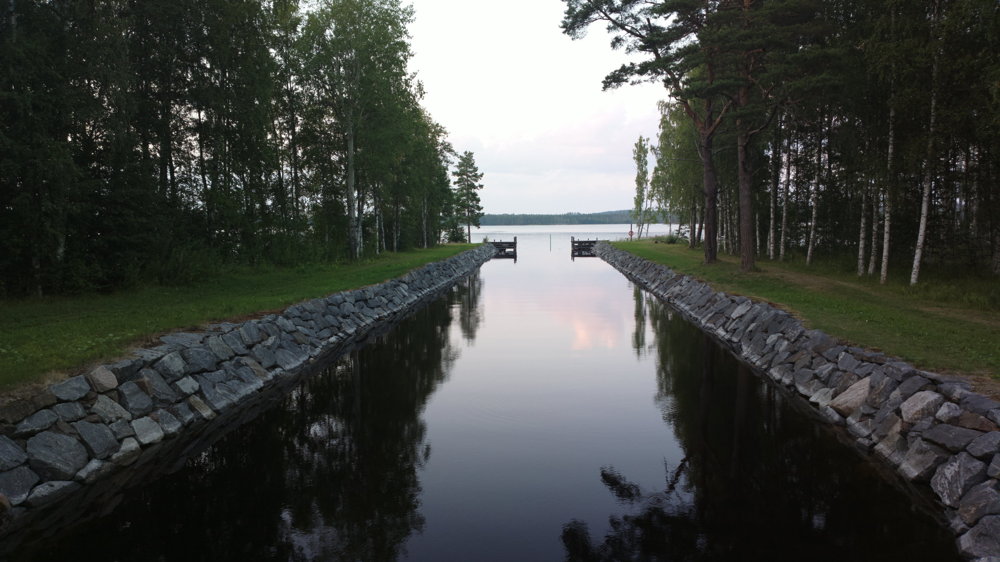
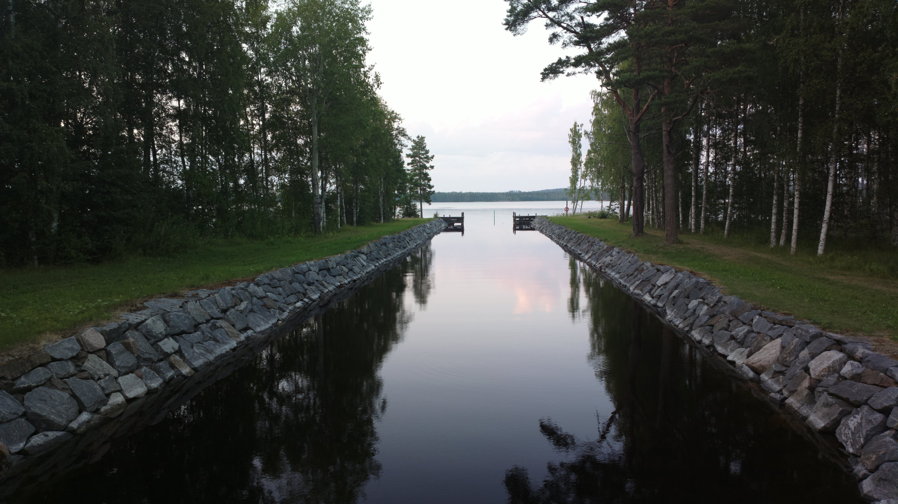

I am a humorous creative person who also has analytical talent.
Music has been a kind of breathing hole in my life and I have studied it to some extent.
I record music with a hobby in mind at home in the studio and I like to compose my own music more than play music composed by others.
Sometimes I've arranged other people's songs in my own way.
I also read books whenever I have time and in recent years I have read a lot of works by Umberto Eco and Kurt Vonnegut.
I also try to take care of my condition, although in recent years I have had to restrain the sport a bit due to overwork. Currently, Nordic walking has been a very functional hobby. I also like to hike a lot in nature and visit campfire sheds or huts.

I also read books whenever I have time and in recent years I have read a lot of works by Umberto Eco and Kurt Vonnegut.
I also try to take care of my condition, although in recent years I have had to restrain the sport a bit due to overwork. Currently, Nordic walking has been a very functional hobby. I also like to hike a lot in nature and visit campfire sheds or huts.

Picture captured by my Nokia 808 pure view: Telakanava near Savonlinna